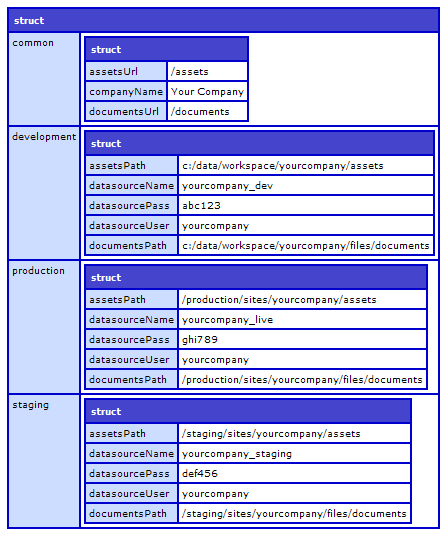
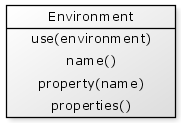

Implementing an Environment object
Let's take a look at how we might implement our environment object.
First, we need to read the XML file and convert the contained data to a format that's easy to use. The format described above converts nicely into a struct using an XML to Struct utility.
So to read and convert our XML file to a struct we have:
{% highlight cfm %}This returns a struct that has the identical structure to the XML file above:

We will convert the XML file to a struct when we initialise our Environment.cfc object:
{% highlight cfm %}Implementing the use() function is quite simple because the data for each environment is stored in it's own "sub" struct.
{% highlight cfm %}Lastly, getting a property is also quite easy to retrieve from the currently selected environment:
{% highlight cfm %}Lastly, we just need a little special handling of the "common" environment properties. These properties need to be added to all of the other environments, so we add a little extra code to the init() function:
{% highlight cfm %}This code has omitted a few details such as error handling, but the complete code is available further below.
Identifying our current environment
In each location where your code will execute there will need to be something present than can be used to decide what environment you are in. Some approaches that may be used include inspecting the domain name the code is running from, or perhaps inspecting the contents of a file that is different in each location.
Identifying the environment using a domain name
Let's first consider that you are using the domain name to determine your environment. Suppose you have three environments; development, staging and production that run on the following domains:
- yourapp.localhost - development
- staging.yourapp.com - staging
- www.yourapp.com - production
Let's create an object that identifies the environment you are running in. This will be called an "environment identifier" and provides only one function which returns a string representing the current environment.
When our DomainEnvironmentIdentifier is created we need to pass in the current "domain name". This is obtained from the cgi.SERVER_NAME variable.
{% highlight cfm %}This is quite a simple component with the single task of determining the environment based on the domain name. The object may be used as follows:
{% highlight cfm %}You'll notice that the mappings for the domain names are stored within the object. For a larger application this mapping information could perhaps be moved to a separate file which is read in by the environment identifier.
Identifying the environment from a file
In more complicated environments, a domain name alone may not be enough to identify an environment. For example, suppose you have two clustered servers running your live production code, and some details are a little different on each server. The domain to access them will be the same, but the environment details may be slightly different.
In cases such as these we can place a file on each server that contains the name of the current environment.
CFML supports a file format called an "ini" file which is essentially made up of "section names" in square brackets, followed by name=value pairs. We can use this as a file format for our environment file:
{% highlight text %} [environment] environment=production {% endhighlight %}So this shows a section called "environment" that contains an item named "environment" with the value "production". These types of files are called INI files and conventionally have a .ini file extension.
We can use the CFML function getProfileString(filePath,section,item) to read this value.
Let's create a FileEnvironmentIdentifier object that uses this file to identify the current environment.
When our FileEnvironmentIdentifier is created we need to pass in the path to the environment file.
{% highlight cfm %}Using our component is very similar to the DomainEnvironmentIdentifier:
{% highlight cfm %}Implementing an Environment object in your application
Your environment settings are something that typically only need to be created once in an application, so it's an ideal candidate for creating on application startup. Let's write an example of how the environment may be created on application startup within an Application.cfc file.
Using domain name environment identifier:
{% highlight cfm %}Using file environment identifier:
{% highlight cfm %}Separation of environment properties from environment identification
In this design of environment objects we have separated out the environment properties from the environment identification. This means that either one is able to freely change with little to no impact on the other.
Further to this, the environment properties and environment identification code only exists in one place making this part of the application easy to change.
Securing your configuration files
In the examples above we made use of two configuration files:
- environments.xml.cfm
- environments.ini.cfm
You'll notice that these files both have a .cfm file extension. This is used to help ensure that the files may not be downloaded. This type of file security implemented as follows:
1. Place the configuration files into a subdirectory, such as /config.
2. Create an Application.cfc in the same directory that simply contains a <cfabort> tag.
{% highlight cfm %}Any request to a .cfm file within this folder will immediately abort and prevent the file from being downloaded.
Environment object code
Complete code for Environment.cfc component.
This is a full version of the component that contains a few additional features:
- Allows you to specify the initial environment value when the object is created.
- Extra function name() that returns the name of the currently active environment.
- Extra function properties() that returns a complete struct of all current properties. It's worth noting that this should only be used for debugging and is not recommended for passing into functions directly.

{% highlight cfm %}Integrating an Environment object with ColdSpring (Advanced)
If you are making use of ColdSpring to manage your objects then it is useful to have your environment object available as a ColdSpring bean.
ColdSpring allows "parameters" to be provided when its "bean" XML file is loaded. This allows us to provide it with:
- the environment configuration file path, and
- the current environment, which is found via our Environment Identifier object.
Our Environment object would be defined within ColdSpring as follows. Notice the use of the two parameter values ${environmentFilePath} and ${environment} which are provided in the "properties" struct when the ColdSpring factory is initialised.
{% highlight cfm %}